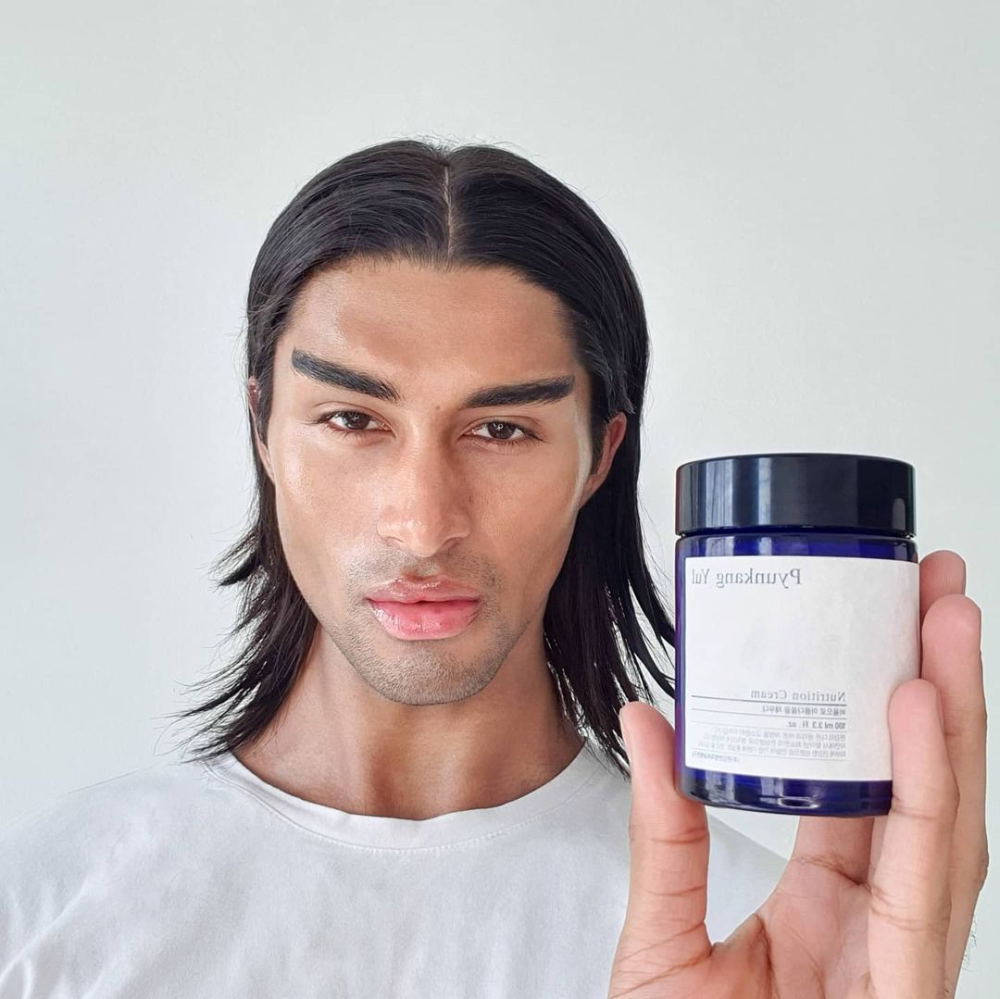
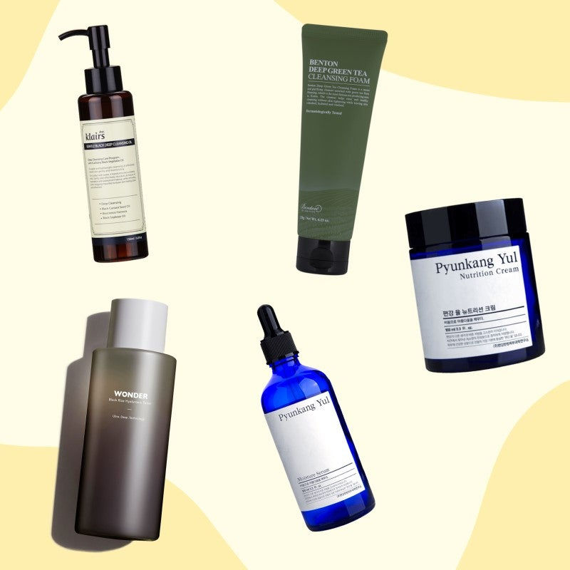

Get The Glow
Description: Exclusive to Korean-Skincare Ever wanted to get that natural glow? Enter Lyon! Lyon is living proof that masculinity and femininity can mix together harmoniously and flawlessly. His passion for fashion, the arts, and skincare are more than a just driving force for Lyon; they are a part of him.
Star Rating
Ever wanted to get that natural glow? Enter Lyon! Lyon is living proof that masculinity and femininity can mix together harmoniously and flawlessly. His passion for fashion, the arts, and skincare are more than a just driving force for Lyon; they are a part of him. Lyons routine focuses on bringing forth plump, naturally glowing skin. Leaving you refreshed throughout the entire day. Get ready to fall asleep feeling pampered and wake up feeling radiant.
Lyion's instagram: @lyon.orie
A few of Lyon's favorite quotes:
- Honey, your skin and soul is Glowing.
- My skincare is my foundation.
- Look after yourself from within and your beauty will shine through your skin.
His set includes:
- Benton Deep Green Tea Cleansing Foam
- Klairs Gentle Black Deep Cleansing Oil
- Haru Haru Wonder Black Rice Hyaluronic Toner
- Pyunkang Yul Moisture Serum
- Pyunkang Yul Nutrition Cream
This kit has the perfect products for a non-stripping double cleanse, extra hydration and moisture and is topped off with one of our favorite glow creams. Products have been hand picked by Lyon himself. Get the glow with Lyon's routine. Lyons routine uses is cruelty free, clean, and green products.
Centella Asiatica Extract, Sodium Cocoyl Isethionate, Glycerin, Water, Sodium Cocoyl Glyci-nate, Coco-Betaine,1,2-Hexanediol, Pinus Sylvestris Leaf Oil, Allantoin, Panthenol,Triticum Vulgare (Wheat) Sprout Extract, Brassica Oleracea Italica (Broccol) Extract, Brassica Oleracea Capitata (Cabbage) Leaf Extract, Medicago Sativa (Alfalfa) Extract, RaphanusSativus (Radish) Seed Extract, Bracsica Campestris (Rapeseed) Extract Sodium Methyl Cocoyl Tau rate, Glycer-Stearate, Stearyl Alcohol, Sodium Chloride, Hydrogenated Coconut Add, Butylene Sodium Isethionate, Polyquatemium-67, Caprylyl Glycol, Pentylene Glycol, Salicylic Acid, Hy-d roxyacetophenone,Arachidyl Alcohol, Cetyl Alcohol Disodium EDTA.